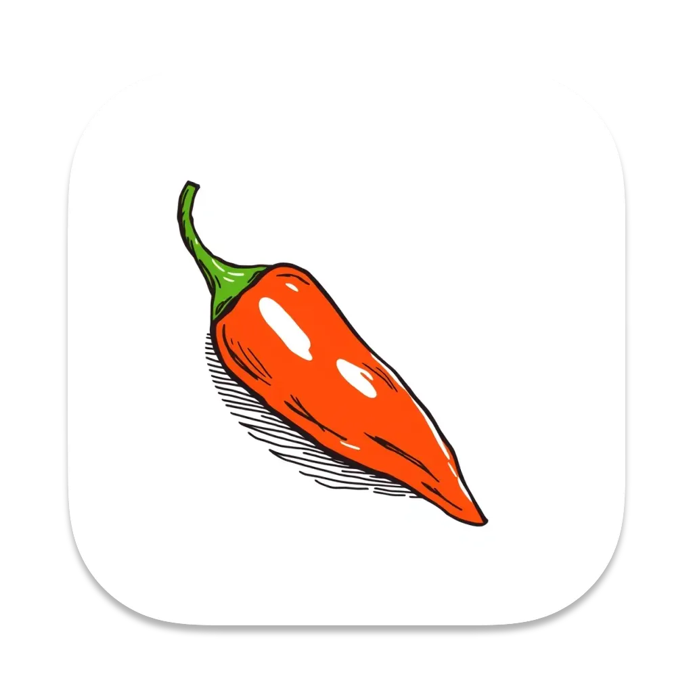
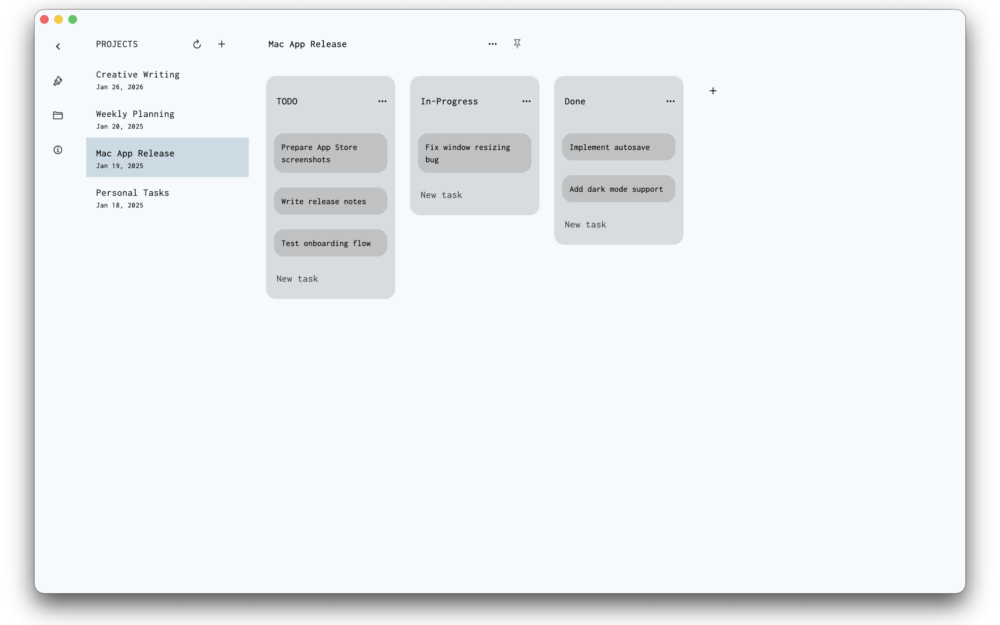
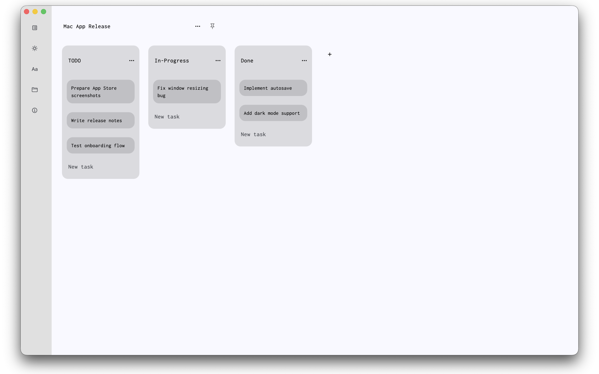
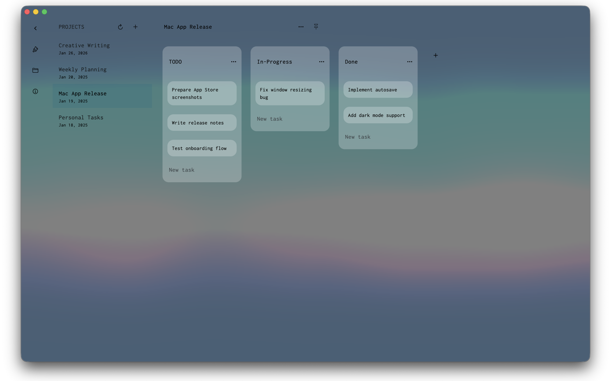
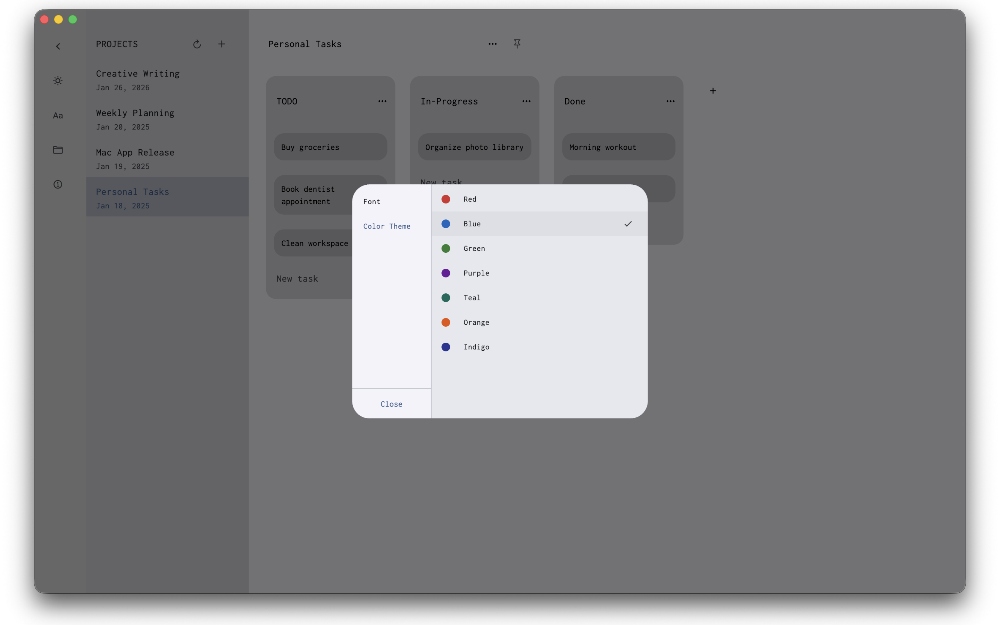

A kanban app for macOS.
Organize projects and tasks.
Works offline with files stored on your Mac.
$8.99 · one-time purchase
Requires Apple Silicon and macOS 14.6+.
★★★★★
“Wanted a local storage, offline mode, no subscription kanban to organize my projects and track tasks. Got that with this and a beautiful, simple design … Great app overall, buy this.”
Create boards with columns such as To Do, In Progress, and Done. Drag tasks between columns to update their status.
Your boards are stored on your Mac. No accounts or tracking.
Boards are YAML or JSON files in a folder you choose. Edit, back up, or track them in Git.
Choose light or dark mode, fonts, color accents, and animated shader backgrounds.
Create and edit boards without an internet connection.
$8.99 on the Mac App Store. No subscription or in-app purchases.
Save boards as templates for new projects. Switch between boards from the project list.




Yes. Creating and editing boards does not require an internet connection.
In a folder you choose. Each board is a .yaml file. You can select .json instead in Settings → Storage.
Yes. Board files can be committed to a Git repository and reviewed in diffs or pull requests.
No. Kanbanero costs $8.99 as a one-time purchase on the Mac App Store. There are no in-app purchases.
Kanbanero requires macOS 14.6 or later on a Mac with Apple Silicon.
No. Kanbanero is available for macOS only. Board files can be opened in a text editor on other platforms.
No. Kanbanero does not collect analytics or track usage.
$8.99 · one-time purchase